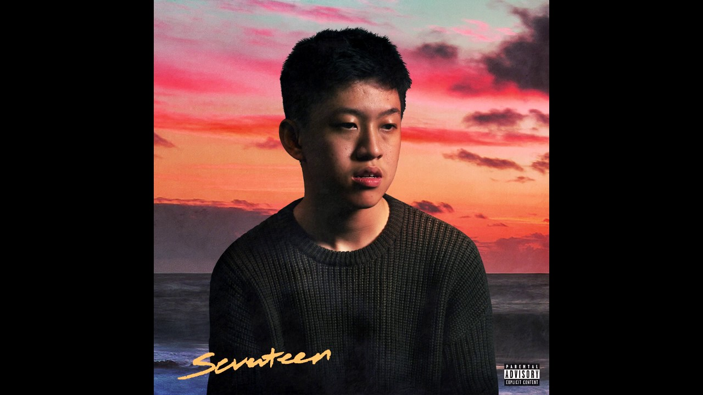

|
The hip-hop artist and Internet celebrity Brian Imanuel A.K.A Rich Chigga, the 17-Year-Old Indonesian Rapper Who Hacked the World
If you’re under the age of, say, 30, and have the sort of Facebook friends who post ironic viral content instead of pious screeds on the presidential election,
there’s a good chance you’ve seen a video to a hip-hop track called “Dat $tick,” by a maverick artist named Rich Chigga.
The song is rather good, actually, but as far as the motifs of hip-hop go, there’s nothing particularly revolutionary about it:
the lyrics concern popping caps and gang affiliation; the actors in the video wield pistols and bottles of rum and groove around in the self-consciously
exaggerated way that calls to mind Drake in the video for “Hotline Bling.”
The video, which went live on YouTube on Feb. 22, has more than 20 million views. Those who have shared it on social media seem to sincerely like
the music but mostly get a kick out of the artist: the guy rapping about “killing pigs” and driving Maseratis is a 17-year-old Indonesian boy who wears a
polo shirt and a Reebok fanny pack and doesn’t look old enough to shave. “This is the hardest n-gga of all time,” the rapper Tory Lanez enthused in a
reaction video released in July, where he and other distinguished hip-hop artists — among them Ghostface Killah and Cam’ron — basically all echoed the
same sentiment, with praise. “I see the comedic side of all this, but what he’s spitting is dope,” Cam’ron said. “His flow was tough.”
(The reaction video now has 4.5 million views.)
Meanwhile, the artist in question was 9,000 miles away in Jakarta, the muggy, perennially hazy capital of Indonesia, where, being 17,
he still lives with his parents. This was not his first viral video. His real name is Brian Imanuel, and in an era when the Internet gets a bad rap — as
the domain of trolls and narcissists and cowards — he is the strongest evidence of its potential as a tool of reinvention for good.
It was here in Jakarta that a skinny homeschooled boy, who spoke only Bahasa Indonesia, discovered YouTube, taught himself the vernacular
English of the American suburbs, and fashioned himself as an online celebrity — first as a comedian, with a preternatural grasp of the darkly ironic
tenor of the humor of Twitter and Vine, and then, most implausibly, as a rapper. A good rapper. He has a quarter of a million followers on Twitter,
nearly 100,000 on SoundCloud, and managers in Los Angeles. Last week, Ghostface Killah — the elder statesman of hip-hop formerly of the Wu-Tang Clan —
remixed “Dat $tick.”
" Flexin' all the time but I just know that you a bourgeoisie "
Rich Chigga - Seventeen
Imanuel seems wryly amused by his climb to American Internet stardom from half a world away. “I just realized I preferred speaking English,
because you can say a lot more in English than you can in Indonesian,” he explains. “I was doing stupid, goofy sh-t, but it was fun. And in my YouTube comments,
people would be like, ‘Why is he speaking English?’”

This was the Friday afternoon before Ghostface Killah’s remix dropped. He and I were in the backseat of his sister Sonia Eryka’s car, on our way to Bandung,
a city three hours to the southwest of the capital. A rapper he knew had a gig there later in the evening, and we were hitting the road early to escape
the snarls of greater Jakarta’s notoriously wretched traffic.
|